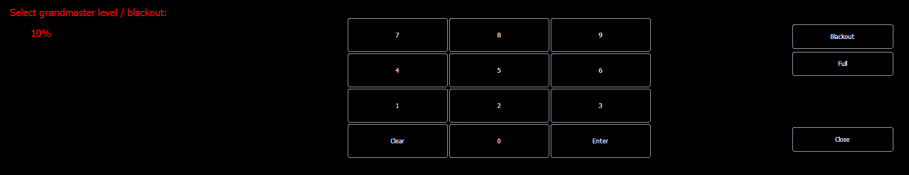

The grandmaster inhibits all live intensity values. If the grandmaster is set at 50%, all live intensities will be at 50% of their actual values.
Blackout sets all lighting levels to zero.
If a grandmaster is set to a value other than 100%, a grandmaster button with the set value will be shown at the top of each display. If blackout is currently on, a blackout button will be shown at the top of the displays.
Clicking on either button will open a new display which will allow you to turn off blackout and set the grandmaster to a different level.
